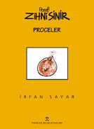

Otomatik karýþtýrma sistemli tarhana tenceresi procesi

|
|
|
|
|
Not: Sayýn Ýrfan Sayar'a bu güzel eserlerinin yayýnýna
izin verdiði için teþekkür ederiz.
www.zihnisinir.com
> Porof. Zihni Sinir'in resmi web sitesi.
Daha
fazlasý aþaðýdaki kitapta bulunmaktadýr:
Porof. Zihni Sinir - Proceler, Ýrfan Sayar,
TÜBÝTAK
Popüler Bilim Kitaplarý 160, Ýlk basým tarihi: Mart 2002
Sayfa Sayýsý: 172
Boyutlarý:
21.5 x 27,5 cm
ISBN 975-403-250-5
Bütün
buluþlarýn iþe yaramasý gerekiyor mu? Gerçekleþmesi mümkün görünmeyen
bir fikrin, aklýn olaðan iþleyiþinde küçük sýçrayýþlar yaratmasý
baþlý baþýna yararlý bir þey olamaz mý? Bilimsel düþünce, biraz
da olaðanýn dýþýna çýkan bu küçük sýçramalarýn bir sonucu deðil
mi? Porof. Zihni Sinir'in procelerinin TÜBÝTAK Popüler Bilim
Kitaplarý arasýnda yer almasý tuhaf mý?..
|